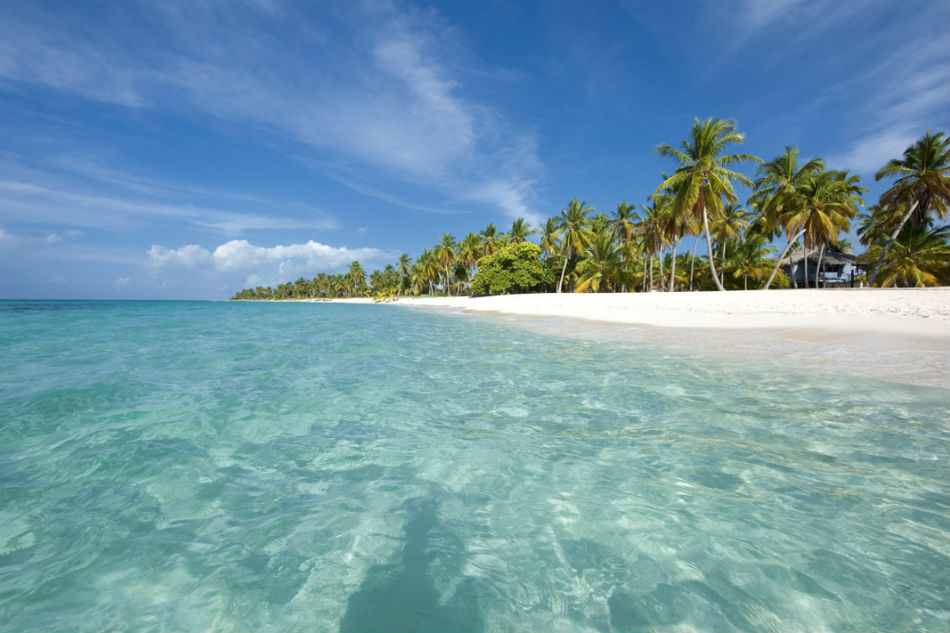

El parque nacional del este, tambien conocido como Parque Nacional Cotubanama, es una de las reservas naturales mas
importantes de la Republica Dominicana. Este parque ofrece una rica biodiversidad y paisajes impresionantes.
A continuacion, se muestra una imagen del Parque Nacional del Este.
En el parque, puedes realizar diversas actividades como:
Para mas informacion puedes visitar los siguientes enlaces
Este es un video del Parque Nacional del Este
Escucha los sonidos de la naturaleza en el parque nacional del este: